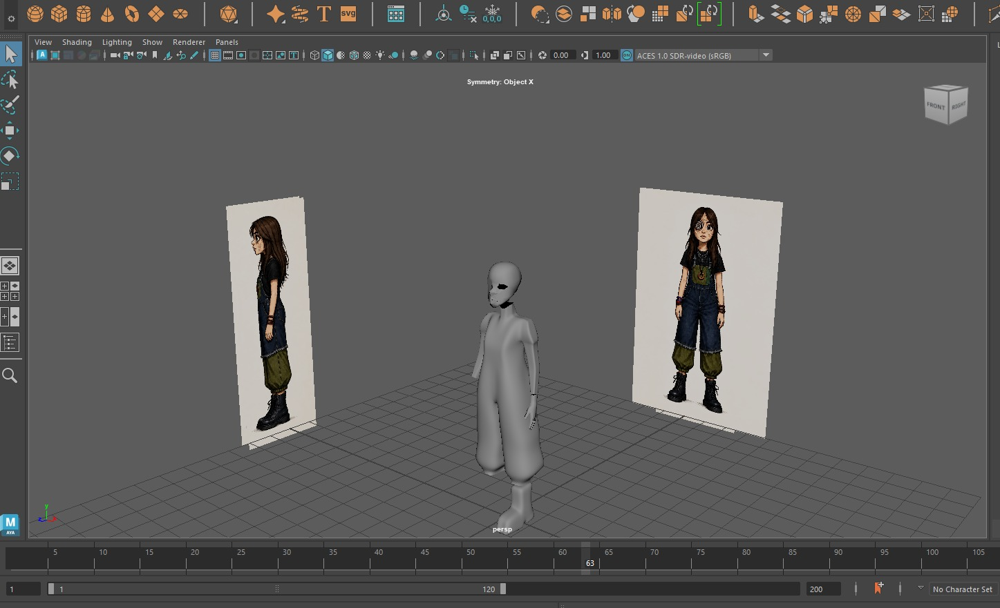
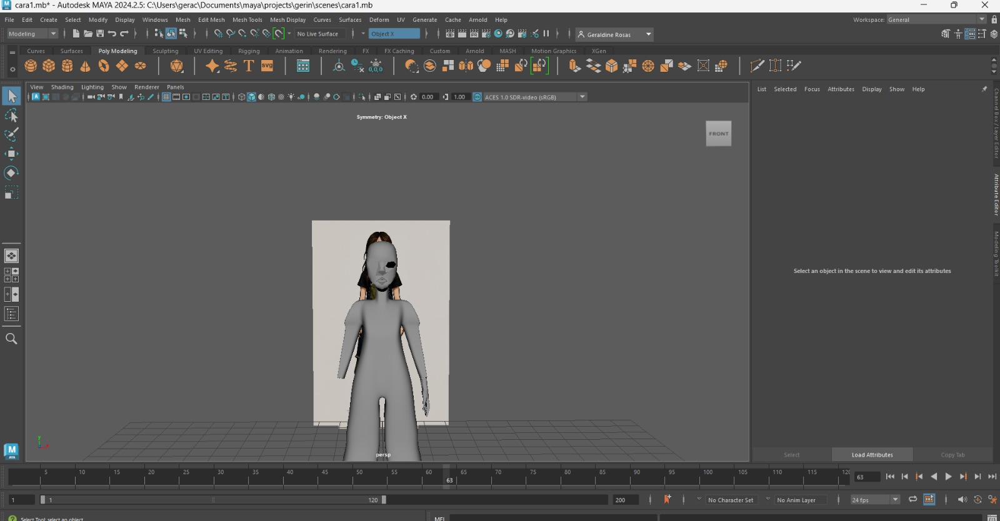
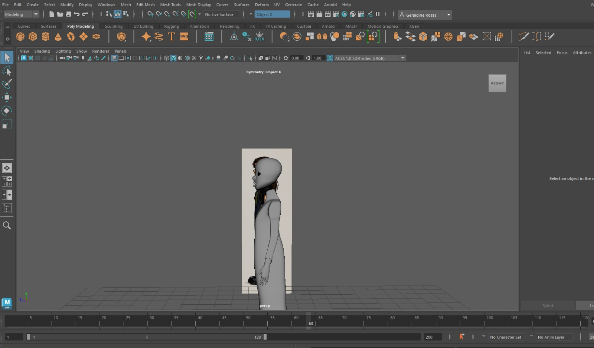
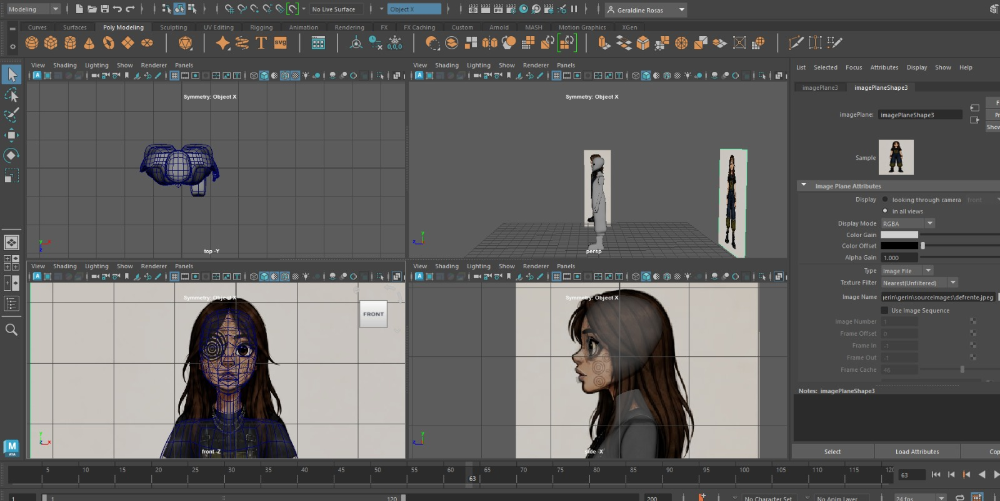

Durante la materia de Multimedia aprendimos a utilizar el programa **Autodesk Maya**, una herramienta de modelado y animación en 3D. A lo largo de las actividades conocimos sus diferentes herramientas y funciones para crear y diseñar objetos tridimensionales. Como parte de nuestro aprendizaje, realizamos un personaje en 3D, al que le dimos forma, agregamos detalles y posteriormente preparamos para animarlo. Este proyecto nos permitió conocer el proceso de creación de personajes digitales, desde el modelado hasta la animación, desarrollando nuestras habilidades creativas y técnicas dentro del diseño multimedia.

Vista de Perspectiva.

Vista Frontal.

Vista Lateral.

Vista de Pantalla competla.
← Volver